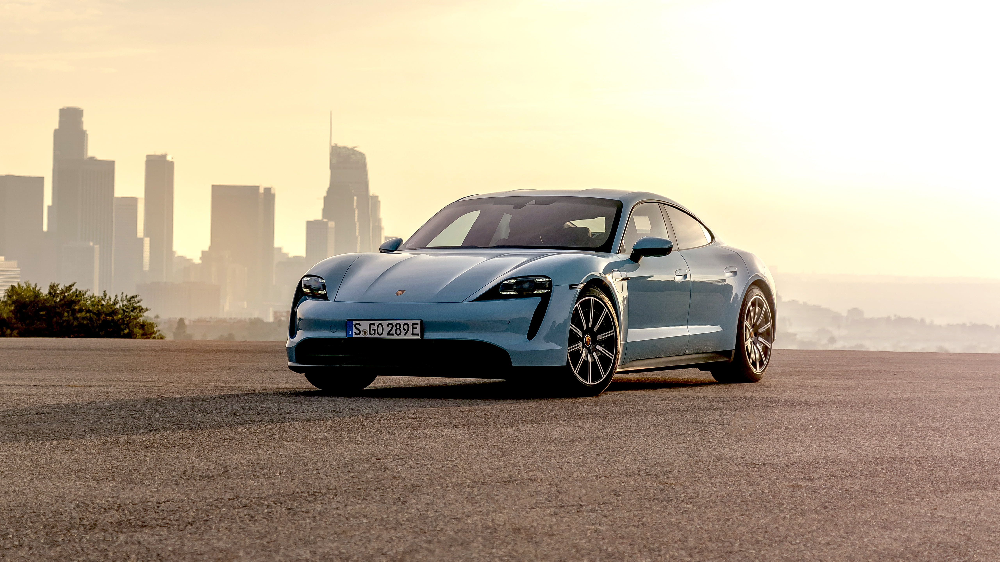
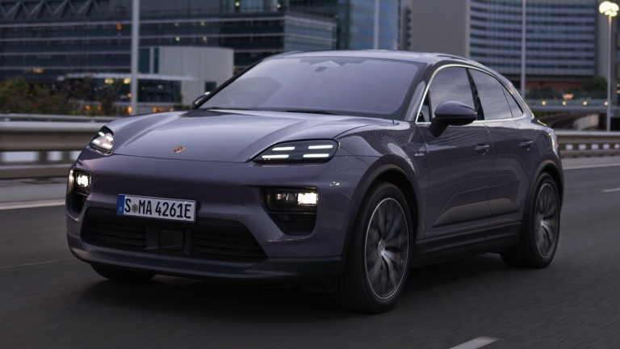

The iconic Porsche brand has taken a bold step into the future with the Taycan,
a stunning all-electric sports car that shatters the mold of traditional EVs. Gone
are the days of quiet, eco-conscious compromises; the Taycan roars
(metaphorically, of course) with the spirit of a true Porsche, offering exhilarating
acceleration, razor-sharp handling, and a luxurious interior that wouldn't feel out
of place in a gas-powered stablemate. With its lightning-fast charging capabilities
and impressive range, the Taycan proves that zero emissions can seamlessly coexist
with pulse-pounding performance. Whether carving through winding roads or gliding
silently through cityscapes, the Taycan delivers a driving experience that's both
sustainable and electrifying. More than just a car, the Taycan represents a paradigm
shift for Porsche, demonstrating their commitment to innovation and a future where
cutting-edge technology doesn't compromise the thrill of the drive. So buckle up, the
revolution is here, and it's arriving in the form of a Porsche unlike any other - the
Tycan.

The Porsche Macan, a beloved compact SUV for driving enthusiasts, is about to get a
jolt of electric excitement. Porsche is revving up for the release of the Macan EV,
bringing its signature performance and luxury into the zero-emission arena. Buckle
up for a future where everyday practicality seamlessly blends with thrilling
electric power. While details are still under wraps, we can expect the Macan EV to
inherit the spirit of its gasoline-powered sibling. Imagine the exhilarating
acceleration and precise handling you love, now delivered with the whisper-quiet
efficiency of an electric powertrain. Porsche promises not to compromise on
performance, ensuring the Macan EV remains a joy to drive on any road.
Beyond the electric heart, the Macan EV will likely retain the sleek design and
luxurious interior that have made the Macan a popular choice. Spaciousness and
versatility will be key, catering to active lifestyles and weekend adventures.
Whether charging up for urban commutes or embarking on spontaneous getaways, the
Macan EV promises to be a capable and stylish companion.
The Porsche Macan EV is more than just a new car; it's a statement. It signifies
Porsche's commitment to sustainable performance, proving that electrifying driving
doesn't mean sacrificing the thrill of the ride. Stay tuned, as the future of the
compact luxury SUV segment is about to get a whole lot more exciting, courtesy of the
Porsche Macan EV.
